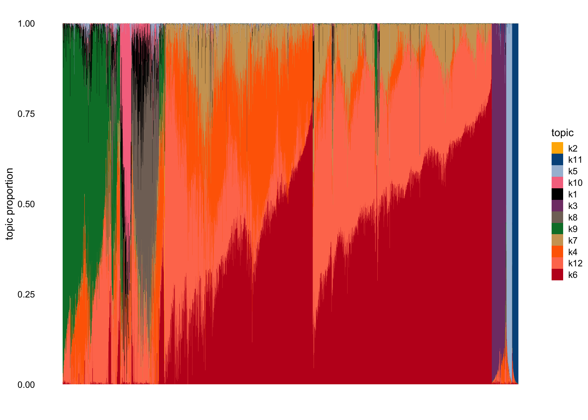
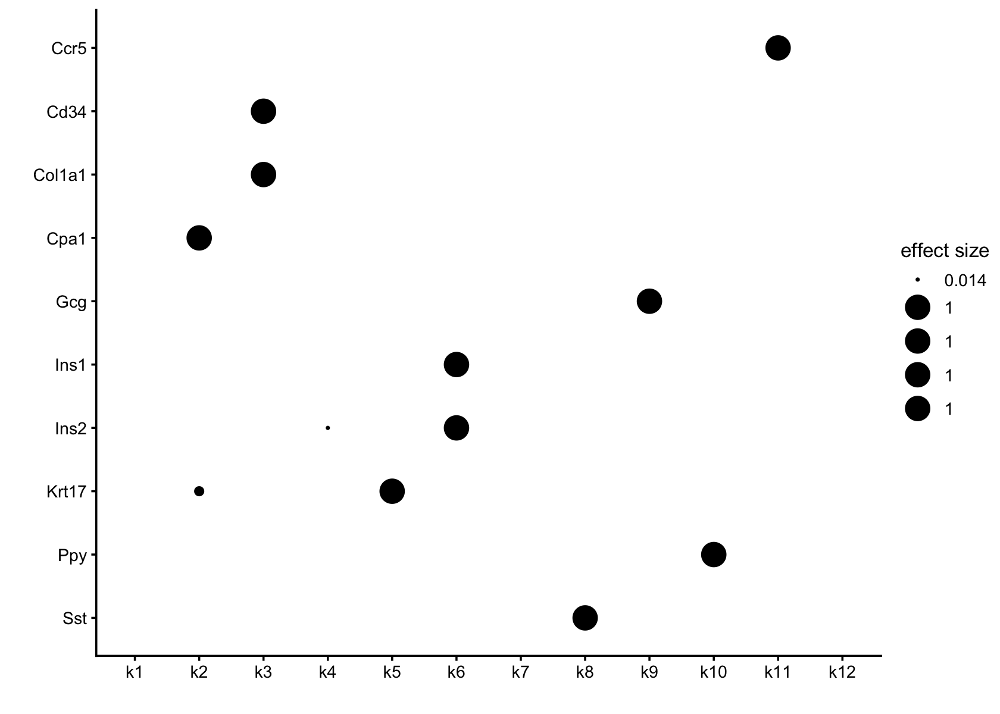
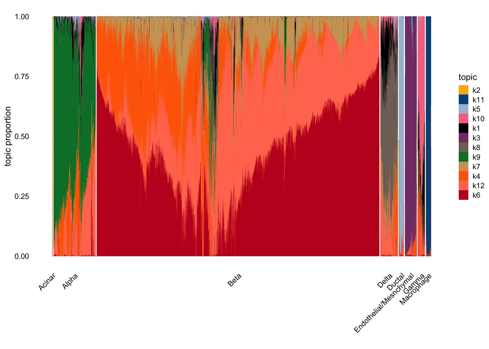
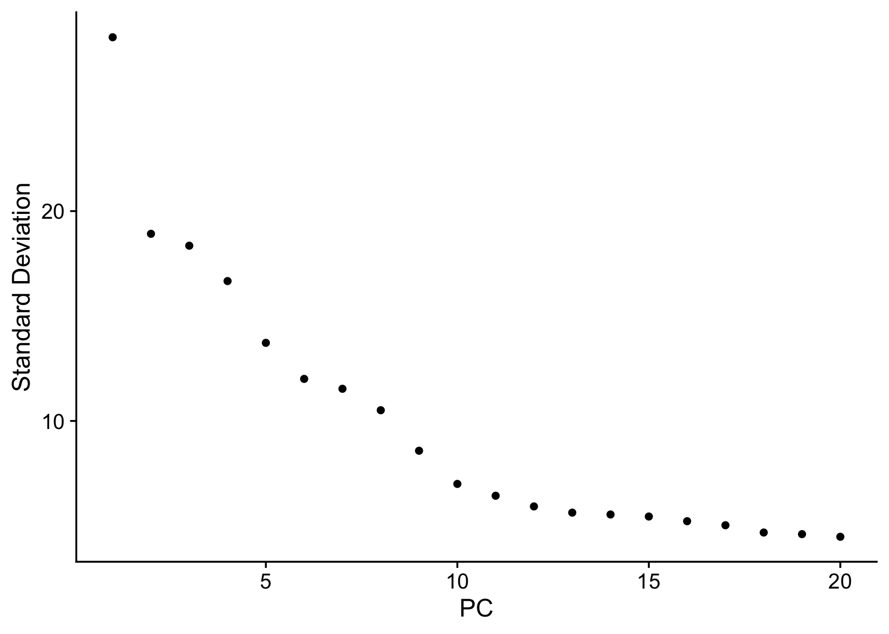
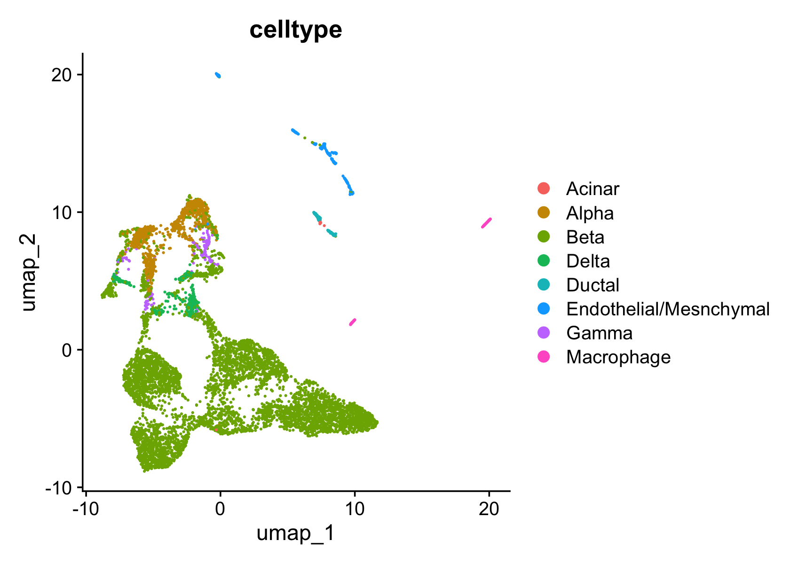

Last updated: 2025-06-17
Checks: 6 1
Knit directory:
single-cell-jamboree/analysis/
This reproducible R Markdown analysis was created with workflowr (version 1.7.1). The Checks tab describes the reproducibility checks that were applied when the results were created. The Past versions tab lists the development history.
The R Markdown file has unstaged changes. To know which version of
the R Markdown file created these results, you’ll want to first commit
it to the Git repo. If you’re still working on the analysis, you can
ignore this warning. When you’re finished, you can run
wflow_publish to commit the R Markdown file and build the
HTML.
Great job! The global environment was empty. Objects defined in the global environment can affect the analysis in your R Markdown file in unknown ways. For reproduciblity it’s best to always run the code in an empty environment.
The command set.seed(1) was run prior to running the
code in the R Markdown file. Setting a seed ensures that any results
that rely on randomness, e.g. subsampling or permutations, are
reproducible.
Great job! Recording the operating system, R version, and package versions is critical for reproducibility.
Nice! There were no cached chunks for this analysis, so you can be confident that you successfully produced the results during this run.
Great job! Using relative paths to the files within your workflowr project makes it easier to run your code on other machines.
Great! You are using Git for version control. Tracking code development and connecting the code version to the results is critical for reproducibility.
The results in this page were generated with repository version ba07b39. See the Past versions tab to see a history of the changes made to the R Markdown and HTML files.
Note that you need to be careful to ensure that all relevant files for
the analysis have been committed to Git prior to generating the results
(you can use wflow_publish or
wflow_git_commit). workflowr only checks the R Markdown
file, but you know if there are other scripts or data files that it
depends on. Below is the status of the Git repository when the results
were generated:
Untracked files:
Untracked: data/GSE156175_RAW/
Untracked: data/panc_cyto_lsa.Rdata
Untracked: data/panc_cyto_lsa_res/
Untracked: data/panc_cyto_lsa_tm_k12.rds
Unstaged changes:
Modified: analysis/pancreas_cytokine_lsa_clustering.Rmd
Modified: analysis/pancreas_cytokine_mf_comparison.Rmd
Note that any generated files, e.g. HTML, png, CSS, etc., are not included in this status report because it is ok for generated content to have uncommitted changes.
These are the previous versions of the repository in which changes were
made to the R Markdown
(analysis/pancreas_cytokine_lsa_clustering.Rmd) and HTML
(docs/pancreas_cytokine_lsa_clustering.html) files. If
you’ve configured a remote Git repository (see
?wflow_git_remote), click on the hyperlinks in the table
below to view the files as they were in that past version.
| File | Version | Author | Date | Message |
|---|---|---|---|---|
| Rmd | a7e6cd5 | Eric Weine | 2025-06-16 | added initial clustering of LSA pancreas cytokine paper |
| html | a7e6cd5 | Eric Weine | 2025-06-16 | added initial clustering of LSA pancreas cytokine paper |
Here we will prepare the single-cell RNA-seq data from Stancill
et al 2021 for analysis with fastTopics and log1pNMF. The data files
were obtained by downloading and extracting tar file GSE183010_RAW.tar
from GEO
accession GSE156175. To run this script, download the files from
GEO, unzip each of the .gz files in GSE183010_RAW, and then put this
directory into ../data/.
Load in the data:
counts1 <- Matrix::t(
Matrix::readMM("../data/GSE156175_RAW/GSM5842388_Rep1_S1_matrix.mtx")
)
genes1 <- readr::read_tsv(
"../data/GSE156175_RAW/GSM5842388_Rep1_S1_features.tsv",
col_names = c("ensembl", "symbol", "type")
)
# Rows: 31053 Columns: 3
# ── Column specification ────────────────────────────────────────────────────────
# Delimiter: "\t"
# chr (3): ensembl, symbol, type
#
# ℹ Use `spec()` to retrieve the full column specification for this data.
# ℹ Specify the column types or set `show_col_types = FALSE` to quiet this message.
barcodes1 <- readr::read_tsv(
"../data/GSE156175_RAW/GSM5842388_Rep1_S1_barcodes.tsv",
col_names = c("barcode")
)
# Rows: 3486 Columns: 1
# ── Column specification ────────────────────────────────────────────────────────
# Delimiter: "\t"
# chr (1): barcode
#
# ℹ Use `spec()` to retrieve the full column specification for this data.
# ℹ Specify the column types or set `show_col_types = FALSE` to quiet this message.
barcodes1$barcode <- substr(barcodes1$barcode, 1, nchar(barcodes1$barcode) - 2)
barcodes1$condition <- "Untreated"
rownames(counts1) <- paste0(barcodes1$barcode, "_", barcodes1$condition)
colnames(counts1) <- genes1$symbol
counts2 <- Matrix::t(
Matrix::readMM("../data/GSE156175_RAW/GSM4726017_S2_matrix.mtx")
)
genes2 <- readr::read_tsv(
"../data/GSE156175_RAW/GSM4726017_S2_features.tsv",
col_names = c("ensembl", "symbol", "type")
)
# Rows: 31053 Columns: 3
# ── Column specification ────────────────────────────────────────────────────────
# Delimiter: "\t"
# chr (3): ensembl, symbol, type
#
# ℹ Use `spec()` to retrieve the full column specification for this data.
# ℹ Specify the column types or set `show_col_types = FALSE` to quiet this message.
barcodes2 <- readr::read_tsv(
"../data/GSE156175_RAW/GSM4726017_S2_barcodes.tsv",
col_names = c("barcode")
)
# Rows: 2911 Columns: 1
# ── Column specification ────────────────────────────────────────────────────────
# Delimiter: "\t"
# chr (1): barcode
#
# ℹ Use `spec()` to retrieve the full column specification for this data.
# ℹ Specify the column types or set `show_col_types = FALSE` to quiet this message.
barcodes2$barcode <- substr(barcodes2$barcode, 1, nchar(barcodes2$barcode) - 2)
barcodes2$condition <- "IL-1B"
rownames(counts2) <- paste0(barcodes2$barcode, "_", barcodes2$condition)
colnames(counts2) <- genes2$symbol
counts3 <- Matrix::t(
Matrix::readMM("../data/GSE156175_RAW/GSM4726018_S3_matrix.mtx")
)
genes3 <- readr::read_tsv(
"../data/GSE156175_RAW/GSM4726018_S3_features.tsv",
col_names = c("ensembl", "symbol", "type")
)
# Rows: 31053 Columns: 3
# ── Column specification ────────────────────────────────────────────────────────
# Delimiter: "\t"
# chr (3): ensembl, symbol, type
#
# ℹ Use `spec()` to retrieve the full column specification for this data.
# ℹ Specify the column types or set `show_col_types = FALSE` to quiet this message.
barcodes3 <- readr::read_tsv(
"../data/GSE156175_RAW/GSM4726018_S3_barcodes.tsv",
col_names = c("barcode")
)
# Rows: 3694 Columns: 1
# ── Column specification ────────────────────────────────────────────────────────
# Delimiter: "\t"
# chr (1): barcode
#
# ℹ Use `spec()` to retrieve the full column specification for this data.
# ℹ Specify the column types or set `show_col_types = FALSE` to quiet this message.
barcodes3$barcode <- substr(barcodes3$barcode, 1, nchar(barcodes3$barcode) - 2)
barcodes3$condition <- "IFNg"
rownames(counts3) <- paste0(barcodes3$barcode, "_", barcodes3$condition)
colnames(counts3) <- genes3$symbol
counts4 <- Matrix::t(
Matrix::readMM("../data/GSE156175_RAW/GSM4726019_S4_matrix.mtx")
)
genes4 <- readr::read_tsv(
"../data/GSE156175_RAW/GSM4726019_S4_features.tsv",
col_names = c("ensembl", "symbol", "type")
)
# Rows: 31053 Columns: 3
# ── Column specification ────────────────────────────────────────────────────────
# Delimiter: "\t"
# chr (3): ensembl, symbol, type
#
# ℹ Use `spec()` to retrieve the full column specification for this data.
# ℹ Specify the column types or set `show_col_types = FALSE` to quiet this message.
barcodes4 <- readr::read_tsv(
"../data/GSE156175_RAW/GSM4726019_S4_barcodes.tsv",
col_names = c("barcode")
)
# Rows: 2480 Columns: 1
# ── Column specification ────────────────────────────────────────────────────────
# Delimiter: "\t"
# chr (1): barcode
#
# ℹ Use `spec()` to retrieve the full column specification for this data.
# ℹ Specify the column types or set `show_col_types = FALSE` to quiet this message.
barcodes4$barcode <- substr(barcodes4$barcode, 1, nchar(barcodes4$barcode) - 2)
barcodes4$condition <- "IL-1B_IFNg"
rownames(counts4) <- paste0(barcodes4$barcode, "_", barcodes4$condition)
colnames(counts4) <- genes4$symbol
counts <- rbind(
as.matrix(counts1),
as.matrix(counts2),
as.matrix(counts3),
as.matrix(counts4)
)
counts <- as(counts, "CsparseMatrix")
barcodes <- rbind(
barcodes1, barcodes2, barcodes3, barcodes4
)
barcodes$cell_bc <- paste0(barcodes$barcode, "_", barcodes$condition)
rm(counts1, counts2, counts3, counts4, barcodes1, barcodes2, barcodes3, barcodes4,
genes1, genes2, genes3, genes4
)
gc()
# used (Mb) gc trigger (Mb) limit (Mb) max used (Mb)
# Ncells 3509540 187.5 6319158 337.5 NA 5243114 280.1
# Vcells 51291359 391.4 815222764 6219.7 16384 892646075 6810.4Remove outliers in terms of total UMI count and very few expressed genes:
counts <- counts[, Matrix::colSums(counts) > 0]
x <- rowSums(counts > 0)
i <- which(x > 2000)
counts <- counts[i,]
outliers <- rownames(counts)[Matrix::rowSums(counts) > 60000]
i <- which(!is.element(rownames(counts),outliers))
counts <- counts[i,]Remove cells with high mitochondrial counts, and remove MALAT1, ribosomal, and mitochondrial genes for further analysis:
mito_genes <- which(substr(colnames(counts),1,2) == "mt")
s <- rowSums(counts)
s_mito <- counts[,mito_genes]
prop_mito <- rowSums(s_mito)/s
i <- which(prop_mito < 0.1)
counts <- counts[i,]
j <- which(!(grepl("^mt-",colnames(counts)) |
grepl("^Rp[sl]",colnames(counts))))
counts <- counts[,j]
j <- which(colnames(counts) != "Malat1")
counts <- counts[,j]
j <- which(colSums(counts > 0) > 2)
counts <- counts[,j]
rm(s_mito, i, j, prop_mito, s, x)
gc()
barcodes <- barcodes %>%
dplyr::filter(cell_bc %in% rownames(counts))
# used (Mb) gc trigger (Mb) limit (Mb) max used (Mb)
# Ncells 3498724 186.9 6319158 337.5 NA 5243114 280.1
# Vcells 43331898 330.6 652178212 4975.8 16384 892646075 6810.4Fit a topic model with \(K = 12\).
set.seed(1)
tm_fit <- fit_poisson_nmf(
X = as(counts, "CsparseMatrix"),
k = 12,
control = list(nc = 7)
)Here is the initial structure plot:
structure_plot(tm_fit, n = Inf)$plot
# Running tsne on 7606 x 12 matrix.
| Version | Author | Date |
|---|---|---|
| a7e6cd5 | Eric Weine | 2025-06-16 |
# Read the 7606 x 12 data matrix successfully!
# Using no_dims = 1, perplexity = 100.000000, and theta = 0.100000
# Computing input similarities...
# Building tree...
# Done in 1.28 seconds (sparsity = 0.051079)!
# Learning embedding...
# Iteration 50: error is 80.693384 (50 iterations in 0.69 seconds)
# Iteration 100: error is 69.957217 (50 iterations in 0.69 seconds)
# Iteration 150: error is 67.787148 (50 iterations in 0.67 seconds)
# Iteration 200: error is 67.279083 (50 iterations in 0.67 seconds)
# Iteration 250: error is 67.091537 (50 iterations in 0.68 seconds)
# Iteration 300: error is 2.356925 (50 iterations in 0.67 seconds)
# Iteration 350: error is 2.061112 (50 iterations in 0.66 seconds)
# Iteration 400: error is 1.875118 (50 iterations in 0.66 seconds)
# Iteration 450: error is 1.759533 (50 iterations in 0.66 seconds)
# Iteration 500: error is 1.675165 (50 iterations in 0.66 seconds)
# Iteration 550: error is 1.611683 (50 iterations in 0.66 seconds)
# Iteration 600: error is 1.560457 (50 iterations in 0.66 seconds)
# Iteration 650: error is 1.517941 (50 iterations in 0.65 seconds)
# Iteration 700: error is 1.482490 (50 iterations in 0.65 seconds)
# Iteration 750: error is 1.452615 (50 iterations in 0.65 seconds)
# Iteration 800: error is 1.427279 (50 iterations in 0.65 seconds)
# Iteration 850: error is 1.405621 (50 iterations in 0.65 seconds)
# Iteration 900: error is 1.386989 (50 iterations in 0.65 seconds)
# Iteration 950: error is 1.370807 (50 iterations in 0.65 seconds)
# Iteration 1000: error is 1.356731 (50 iterations in 0.65 seconds)
# Fitting performed in 13.24 seconds.Below is a heatmap annotation of the marker genes given in the Stancill paper:
scale_rows <- function (A)
A / apply(A,1,max)
# using marker genes, I would like to connect each topic to a celltype
marker_genes <- c("Ins1","Ins2","Gcg","Sst",
"Ppy","Krt17","Ccr5",
"Col1a1", "Cd34", "Cpa1")
F <- poisson2multinom(tm_fit)$F
F <- F[marker_genes,]
F <- scale_rows(F)
rownames(F) <- marker_genes
p <- annotation_heatmap(F,select_features = "all",verbose = FALSE)
print(p)
| Version | Author | Date |
|---|---|---|
| a7e6cd5 | Eric Weine | 2025-06-16 |
Below are some comments relating my guesses about factor associations. Many of the beta associated factors are non-specific:
# factor associations
# k1: ?
# k2: Acinar
# k3: Endothelial/Mesnchymal
# k4: ? (presumably Beta)
# k5: Ductal
# k6: Beta
# k7: ? (presumably Beta)
# k8: Delta
# k9: Alpha
# k10: Gamma (PP)
# k11: Macrophage
# k12: ? (presumably Beta)Now, I do celltype assignments. I used 1/3 as a threshold on the topic proportions to determine celltype because this seemed to look reasonable visually. Below is the structure plot with cells grouped by type.
L <- poisson2multinom(tm_fit)$L
L_df <- as.data.frame(L)
L_df <- L_df %>%
dplyr::mutate(
cluster = case_when(
k2 > (1/3) ~ "Acinar",
k3 > (1/3) ~ "Endothelial/Mesnchymal",
k5 > (1/3) ~ "Ductal",
k8 > (1/3) ~ "Delta",
k9 > (1/3) ~ "Alpha",
k10 > (1/3) ~ "Gamma",
k11 > (1/3) ~ "Macrophage",
TRUE ~ "Beta"
)
)
structure_plot(tm_fit, grouping = L_df$cluster, gap = 20, n = Inf)$plot
# Running tsne on 860 x 12 matrix.
# Running tsne on 5780 x 12 matrix.
# Running tsne on 359 x 12 matrix.
# Running tsne on 101 x 12 matrix.
# Running tsne on 244 x 12 matrix.
# Running tsne on 145 x 12 matrix.
# Running tsne on 107 x 12 matrix.
| Version | Author | Date |
|---|---|---|
| a7e6cd5 | Eric Weine | 2025-06-16 |
# Read the 860 x 12 data matrix successfully!
# Using no_dims = 1, perplexity = 100.000000, and theta = 0.100000
# Computing input similarities...
# Building tree...
# Done in 0.13 seconds (sparsity = 0.435968)!
# Learning embedding...
# Iteration 50: error is 54.450555 (50 iterations in 0.06 seconds)
# Iteration 100: error is 53.060370 (50 iterations in 0.06 seconds)
# Iteration 150: error is 52.992331 (50 iterations in 0.05 seconds)
# Iteration 200: error is 52.992325 (50 iterations in 0.05 seconds)
# Iteration 250: error is 52.992325 (50 iterations in 0.05 seconds)
# Iteration 300: error is 0.955465 (50 iterations in 0.05 seconds)
# Iteration 350: error is 0.923065 (50 iterations in 0.05 seconds)
# Iteration 400: error is 0.919553 (50 iterations in 0.05 seconds)
# Iteration 450: error is 0.919322 (50 iterations in 0.05 seconds)
# Iteration 500: error is 0.919307 (50 iterations in 0.05 seconds)
# Iteration 550: error is 0.919306 (50 iterations in 0.05 seconds)
# Iteration 600: error is 0.919305 (50 iterations in 0.05 seconds)
# Iteration 650: error is 0.919306 (50 iterations in 0.06 seconds)
# Iteration 700: error is 0.919306 (50 iterations in 0.05 seconds)
# Iteration 750: error is 0.919306 (50 iterations in 0.05 seconds)
# Iteration 800: error is 0.919306 (50 iterations in 0.05 seconds)
# Iteration 850: error is 0.919306 (50 iterations in 0.05 seconds)
# Iteration 900: error is 0.919307 (50 iterations in 0.05 seconds)
# Iteration 950: error is 0.919306 (50 iterations in 0.05 seconds)
# Iteration 1000: error is 0.919306 (50 iterations in 0.05 seconds)
# Fitting performed in 1.08 seconds.
# Read the 5780 x 12 data matrix successfully!
# Using no_dims = 1, perplexity = 100.000000, and theta = 0.100000
# Computing input similarities...
# Building tree...
# Done in 0.97 seconds (sparsity = 0.067797)!
# Learning embedding...
# Iteration 50: error is 77.350304 (50 iterations in 0.50 seconds)
# Iteration 100: error is 67.687150 (50 iterations in 0.55 seconds)
# Iteration 150: error is 65.479529 (50 iterations in 0.64 seconds)
# Iteration 200: error is 65.141657 (50 iterations in 0.47 seconds)
# Iteration 250: error is 65.077157 (50 iterations in 0.62 seconds)
# Iteration 300: error is 2.110690 (50 iterations in 0.58 seconds)
# Iteration 350: error is 1.866561 (50 iterations in 0.73 seconds)
# Iteration 400: error is 1.741297 (50 iterations in 0.70 seconds)
# Iteration 450: error is 1.659457 (50 iterations in 0.49 seconds)
# Iteration 500: error is 1.598966 (50 iterations in 0.62 seconds)
# Iteration 550: error is 1.551741 (50 iterations in 0.56 seconds)
# Iteration 600: error is 1.515450 (50 iterations in 0.60 seconds)
# Iteration 650: error is 1.486684 (50 iterations in 0.56 seconds)
# Iteration 700: error is 1.463431 (50 iterations in 0.64 seconds)
# Iteration 750: error is 1.444508 (50 iterations in 0.49 seconds)
# Iteration 800: error is 1.428971 (50 iterations in 0.70 seconds)
# Iteration 850: error is 1.416041 (50 iterations in 0.53 seconds)
# Iteration 900: error is 1.405163 (50 iterations in 0.47 seconds)
# Iteration 950: error is 1.395816 (50 iterations in 0.47 seconds)
# Iteration 1000: error is 1.387994 (50 iterations in 0.63 seconds)
# Fitting performed in 11.54 seconds.
# Read the 359 x 12 data matrix successfully!
# Using no_dims = 1, perplexity = 100.000000, and theta = 0.100000
# Computing input similarities...
# Building tree...
# Done in 0.05 seconds (sparsity = 0.941659)!
# Learning embedding...
# Iteration 50: error is 44.081109 (50 iterations in 0.02 seconds)
# Iteration 100: error is 44.081563 (50 iterations in 0.02 seconds)
# Iteration 150: error is 44.082708 (50 iterations in 0.02 seconds)
# Iteration 200: error is 44.081505 (50 iterations in 0.02 seconds)
# Iteration 250: error is 44.083056 (50 iterations in 0.02 seconds)
# Iteration 300: error is 0.508840 (50 iterations in 0.02 seconds)
# Iteration 350: error is 0.505643 (50 iterations in 0.02 seconds)
# Iteration 400: error is 0.505648 (50 iterations in 0.02 seconds)
# Iteration 450: error is 0.505648 (50 iterations in 0.02 seconds)
# Iteration 500: error is 0.505648 (50 iterations in 0.02 seconds)
# Iteration 550: error is 0.505648 (50 iterations in 0.02 seconds)
# Iteration 600: error is 0.505648 (50 iterations in 0.02 seconds)
# Iteration 650: error is 0.505648 (50 iterations in 0.02 seconds)
# Iteration 700: error is 0.505648 (50 iterations in 0.02 seconds)
# Iteration 750: error is 0.505648 (50 iterations in 0.02 seconds)
# Iteration 800: error is 0.505648 (50 iterations in 0.02 seconds)
# Iteration 850: error is 0.505648 (50 iterations in 0.02 seconds)
# Iteration 900: error is 0.505648 (50 iterations in 0.02 seconds)
# Iteration 950: error is 0.505648 (50 iterations in 0.02 seconds)
# Iteration 1000: error is 0.505648 (50 iterations in 0.02 seconds)
# Fitting performed in 0.39 seconds.
# Read the 101 x 12 data matrix successfully!
# Using no_dims = 1, perplexity = 32.000000, and theta = 0.100000
# Computing input similarities...
# Building tree...
# Done in 0.00 seconds (sparsity = 0.987354)!
# Learning embedding...
# Iteration 50: error is 50.755288 (50 iterations in 0.00 seconds)
# Iteration 100: error is 49.222799 (50 iterations in 0.00 seconds)
# Iteration 150: error is 49.872689 (50 iterations in 0.00 seconds)
# Iteration 200: error is 49.549441 (50 iterations in 0.00 seconds)
# Iteration 250: error is 49.560218 (50 iterations in 0.00 seconds)
# Iteration 300: error is 1.473837 (50 iterations in 0.00 seconds)
# Iteration 350: error is 0.844872 (50 iterations in 0.00 seconds)
# Iteration 400: error is 0.748577 (50 iterations in 0.00 seconds)
# Iteration 450: error is 0.719521 (50 iterations in 0.00 seconds)
# Iteration 500: error is 0.717439 (50 iterations in 0.00 seconds)
# Iteration 550: error is 0.717405 (50 iterations in 0.00 seconds)
# Iteration 600: error is 0.717405 (50 iterations in 0.00 seconds)
# Iteration 650: error is 0.717405 (50 iterations in 0.00 seconds)
# Iteration 700: error is 0.717405 (50 iterations in 0.00 seconds)
# Iteration 750: error is 0.717405 (50 iterations in 0.00 seconds)
# Iteration 800: error is 0.717405 (50 iterations in 0.00 seconds)
# Iteration 850: error is 0.717405 (50 iterations in 0.00 seconds)
# Iteration 900: error is 0.717405 (50 iterations in 0.00 seconds)
# Iteration 950: error is 0.717405 (50 iterations in 0.00 seconds)
# Iteration 1000: error is 0.717405 (50 iterations in 0.00 seconds)
# Fitting performed in 0.07 seconds.
# Read the 244 x 12 data matrix successfully!
# Using no_dims = 1, perplexity = 80.000000, and theta = 0.100000
# Computing input similarities...
# Building tree...
# Done in 0.02 seconds (sparsity = 0.995599)!
# Learning embedding...
# Iteration 50: error is 41.382427 (50 iterations in 0.01 seconds)
# Iteration 100: error is 41.375883 (50 iterations in 0.01 seconds)
# Iteration 150: error is 41.380250 (50 iterations in 0.01 seconds)
# Iteration 200: error is 41.378794 (50 iterations in 0.01 seconds)
# Iteration 250: error is 41.372613 (50 iterations in 0.01 seconds)
# Iteration 300: error is 0.308338 (50 iterations in 0.01 seconds)
# Iteration 350: error is 0.305214 (50 iterations in 0.01 seconds)
# Iteration 400: error is 0.305232 (50 iterations in 0.01 seconds)
# Iteration 450: error is 0.305242 (50 iterations in 0.01 seconds)
# Iteration 500: error is 0.305233 (50 iterations in 0.01 seconds)
# Iteration 550: error is 0.305242 (50 iterations in 0.01 seconds)
# Iteration 600: error is 0.305232 (50 iterations in 0.01 seconds)
# Iteration 650: error is 0.305232 (50 iterations in 0.01 seconds)
# Iteration 700: error is 0.305232 (50 iterations in 0.01 seconds)
# Iteration 750: error is 0.305232 (50 iterations in 0.01 seconds)
# Iteration 800: error is 0.305242 (50 iterations in 0.02 seconds)
# Iteration 850: error is 0.305242 (50 iterations in 0.02 seconds)
# Iteration 900: error is 0.305233 (50 iterations in 0.01 seconds)
# Iteration 950: error is 0.305233 (50 iterations in 0.01 seconds)
# Iteration 1000: error is 0.305242 (50 iterations in 0.01 seconds)
# Fitting performed in 0.24 seconds.
# Read the 145 x 12 data matrix successfully!
# Using no_dims = 1, perplexity = 47.000000, and theta = 0.100000
# Computing input similarities...
# Building tree...
# Done in 0.01 seconds (sparsity = 0.992247)!
# Learning embedding...
# Iteration 50: error is 46.035930 (50 iterations in 0.01 seconds)
# Iteration 100: error is 46.642462 (50 iterations in 0.01 seconds)
# Iteration 150: error is 46.518155 (50 iterations in 0.01 seconds)
# Iteration 200: error is 45.610519 (50 iterations in 0.01 seconds)
# Iteration 250: error is 47.889982 (50 iterations in 0.01 seconds)
# Iteration 300: error is 0.769707 (50 iterations in 0.01 seconds)
# Iteration 350: error is 0.636049 (50 iterations in 0.01 seconds)
# Iteration 400: error is 0.635995 (50 iterations in 0.00 seconds)
# Iteration 450: error is 0.635994 (50 iterations in 0.00 seconds)
# Iteration 500: error is 0.635983 (50 iterations in 0.00 seconds)
# Iteration 550: error is 0.635995 (50 iterations in 0.00 seconds)
# Iteration 600: error is 0.635995 (50 iterations in 0.00 seconds)
# Iteration 650: error is 0.635995 (50 iterations in 0.00 seconds)
# Iteration 700: error is 0.635995 (50 iterations in 0.00 seconds)
# Iteration 750: error is 0.635995 (50 iterations in 0.00 seconds)
# Iteration 800: error is 0.635995 (50 iterations in 0.00 seconds)
# Iteration 850: error is 0.635994 (50 iterations in 0.00 seconds)
# Iteration 900: error is 0.635995 (50 iterations in 0.00 seconds)
# Iteration 950: error is 0.635995 (50 iterations in 0.00 seconds)
# Iteration 1000: error is 0.635995 (50 iterations in 0.00 seconds)
# Fitting performed in 0.11 seconds.
# Read the 107 x 12 data matrix successfully!
# Using no_dims = 1, perplexity = 34.000000, and theta = 0.100000
# Computing input similarities...
# Building tree...
# Done in 0.00 seconds (sparsity = 0.988209)!
# Learning embedding...
# Iteration 50: error is 48.555386 (50 iterations in 0.00 seconds)
# Iteration 100: error is 50.962431 (50 iterations in 0.00 seconds)
# Iteration 150: error is 48.700230 (50 iterations in 0.00 seconds)
# Iteration 200: error is 51.774051 (50 iterations in 0.00 seconds)
# Iteration 250: error is 50.444804 (50 iterations in 0.00 seconds)
# Iteration 300: error is 1.024895 (50 iterations in 0.00 seconds)
# Iteration 350: error is 0.684024 (50 iterations in 0.00 seconds)
# Iteration 400: error is 0.635492 (50 iterations in 0.00 seconds)
# Iteration 450: error is 0.635491 (50 iterations in 0.00 seconds)
# Iteration 500: error is 0.635492 (50 iterations in 0.00 seconds)
# Iteration 550: error is 0.635492 (50 iterations in 0.00 seconds)
# Iteration 600: error is 0.635492 (50 iterations in 0.00 seconds)
# Iteration 650: error is 0.635492 (50 iterations in 0.00 seconds)
# Iteration 700: error is 0.635492 (50 iterations in 0.00 seconds)
# Iteration 750: error is 0.635492 (50 iterations in 0.00 seconds)
# Iteration 800: error is 0.635492 (50 iterations in 0.00 seconds)
# Iteration 850: error is 0.635492 (50 iterations in 0.00 seconds)
# Iteration 900: error is 0.635492 (50 iterations in 0.00 seconds)
# Iteration 950: error is 0.635492 (50 iterations in 0.00 seconds)
# Iteration 1000: error is 0.635492 (50 iterations in 0.00 seconds)
# Fitting performed in 0.07 seconds.Overall, this clustering looks quite good, but there is a small pocket of beta cells that have loadings on the green, black, and grey factors, which indicate that they could also be alpha or delta cells. Perhaps additional investigation into these cells (e.g. with a UMAP) could help distinguish their precise types. Or, we could exclude them as not having a clear type.
Next, I investigated a UMAP plot to see how our clusters looked. Below is an elbow plot of the PCs created by Seurat
barcodes$celltype <- L_df$cluster
counts <- counts[,!duplicated(colnames(counts))]
so <- CreateSeuratObject(counts = Matrix::t(counts), meta.data = barcodes)
# Warning: Setting row names on a tibble is deprecated.
so <- SCTransform(so, verbose = FALSE)
so <- RunPCA(so, verbose = FALSE)
ElbowPlot(so)
so <- RunUMAP(so, dims = 1:10, verbose = FALSE)
# Warning: The default method for RunUMAP has changed from calling Python UMAP via reticulate to the R-native UWOT using the cosine metric
# To use Python UMAP via reticulate, set umap.method to 'umap-learn' and metric to 'correlation'
# This message will be shown once per session
DimPlot(so, group.by = "celltype")
There are clearly a few cells on the UMAP plot that appear to lie in a different cluster than their assignment. However, I’m not convinced that this plot is any more reliable than the topic model structure plot.
sessionInfo()
# R version 4.4.0 (2024-04-24)
# Platform: aarch64-apple-darwin20
# Running under: macOS Ventura 13.5
#
# Matrix products: default
# BLAS: /Library/Frameworks/R.framework/Versions/4.4-arm64/Resources/lib/libRblas.0.dylib
# LAPACK: /Library/Frameworks/R.framework/Versions/4.4-arm64/Resources/lib/libRlapack.dylib; LAPACK version 3.12.0
#
# locale:
# [1] en_US.UTF-8/en_US.UTF-8/en_US.UTF-8/C/en_US.UTF-8/en_US.UTF-8
#
# time zone: America/New_York
# tzcode source: internal
#
# attached base packages:
# [1] stats graphics grDevices utils datasets methods base
#
# other attached packages:
# [1] Seurat_5.1.0 SeuratObject_5.0.2 sp_2.1-4 dplyr_1.1.4
# [5] fastTopics_0.7-24 Matrix_1.7-0
#
# loaded via a namespace (and not attached):
# [1] RcppAnnoy_0.0.22 splines_4.4.0
# [3] later_1.4.2 tibble_3.2.1
# [5] polyclip_1.10-6 fastDummies_1.7.3
# [7] lifecycle_1.0.4 mixsqp_0.3-54
# [9] rprojroot_2.0.4 globals_0.16.3
# [11] lattice_0.22-6 vroom_1.6.5
# [13] MASS_7.3-61 magrittr_2.0.3
# [15] plotly_4.10.4 sass_0.4.10
# [17] rmarkdown_2.29 jquerylib_0.1.4
# [19] yaml_2.3.10 httpuv_1.6.15
# [21] glmGamPoi_1.16.0 sctransform_0.4.1
# [23] spam_2.10-0 spatstat.sparse_3.1-0
# [25] reticulate_1.38.0 cowplot_1.1.3
# [27] pbapply_1.7-2 RColorBrewer_1.1-3
# [29] abind_1.4-5 zlibbioc_1.50.0
# [31] Rtsne_0.17 quadprog_1.5-8
# [33] GenomicRanges_1.56.1 purrr_1.0.4
# [35] BiocGenerics_0.50.0 git2r_0.33.0
# [37] GenomeInfoDbData_1.2.12 IRanges_2.38.0
# [39] S4Vectors_0.42.0 ggrepel_0.9.6
# [41] irlba_2.3.5.1 listenv_0.9.1
# [43] spatstat.utils_3.0-5 goftest_1.2-3
# [45] RSpectra_0.16-2 spatstat.random_3.2-3
# [47] fitdistrplus_1.1-11 parallelly_1.37.1
# [49] DelayedMatrixStats_1.26.0 leiden_0.4.3.1
# [51] codetools_0.2-20 DelayedArray_0.30.1
# [53] tidyselect_1.2.1 UCSC.utils_1.0.0
# [55] farver_2.1.2 matrixStats_1.3.0
# [57] stats4_4.4.0 spatstat.explore_3.2-7
# [59] jsonlite_2.0.0 progressr_0.14.0
# [61] ggridges_0.5.6 survival_3.7-0
# [63] tools_4.4.0 progress_1.2.3
# [65] ica_1.0-3 Rcpp_1.0.14
# [67] glue_1.8.0 SparseArray_1.4.8
# [69] gridExtra_2.3 xfun_0.52
# [71] MatrixGenerics_1.16.0 GenomeInfoDb_1.40.1
# [73] withr_3.0.2 fastmap_1.2.0
# [75] digest_0.6.37 truncnorm_1.0-9
# [77] R6_2.6.1 mime_0.13
# [79] colorspace_2.1-1 scattermore_1.2
# [81] gtools_3.9.5 tensor_1.5
# [83] spatstat.data_3.1-2 RhpcBLASctl_0.23-42
# [85] tidyr_1.3.1 generics_0.1.3
# [87] data.table_1.17.0 prettyunits_1.2.0
# [89] httr_1.4.7 htmlwidgets_1.6.4
# [91] S4Arrays_1.4.1 whisker_0.4.1
# [93] uwot_0.2.3 pkgconfig_2.0.3
# [95] gtable_0.3.6 workflowr_1.7.1
# [97] lmtest_0.9-40 XVector_0.44.0
# [99] htmltools_0.5.8.1 dotCall64_1.1-1
# [101] scales_1.3.0 Biobase_2.64.0
# [103] png_0.1-8 ashr_2.2-66
# [105] knitr_1.50 rstudioapi_0.16.0
# [107] tzdb_0.4.0 reshape2_1.4.4
# [109] nlme_3.1-165 cachem_1.1.0
# [111] zoo_1.8-12 stringr_1.5.1
# [113] KernSmooth_2.23-24 parallel_4.4.0
# [115] miniUI_0.1.1.1 pillar_1.10.2
# [117] grid_4.4.0 vctrs_0.6.5
# [119] RANN_2.6.1 promises_1.3.2
# [121] xtable_1.8-4 cluster_2.1.6
# [123] evaluate_1.0.3 readr_2.1.5
# [125] invgamma_1.1 cli_3.6.5
# [127] compiler_4.4.0 rlang_1.1.6
# [129] crayon_1.5.3 SQUAREM_2021.1
# [131] future.apply_1.11.2 labeling_0.4.3
# [133] plyr_1.8.9 fs_1.6.6
# [135] stringi_1.8.7 viridisLite_0.4.2
# [137] deldir_2.0-4 munsell_0.5.1
# [139] lazyeval_0.2.2 spatstat.geom_3.2-9
# [141] RcppHNSW_0.6.0 hms_1.1.3
# [143] patchwork_1.2.0 sparseMatrixStats_1.16.0
# [145] bit64_4.0.5 future_1.33.2
# [147] ggplot2_3.5.2 shiny_1.8.1.1
# [149] SummarizedExperiment_1.34.0 ROCR_1.0-11
# [151] igraph_2.0.3 RcppParallel_5.1.10
# [153] bslib_0.9.0 bit_4.0.5